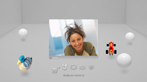

Vrienden > Stem-/videochat > Stem-/videochat opstarten of beëindigen
Stem-/videochat opstarten of beëindigen
Om deze functie te gebruiken, zult u mogelijk uw systeemsoftware moeten updaten.
U kunt stem-/videochatten met personen uit uw vriendenlijst. Om een stemchat te houden, hebt u een audio-invoer-/uitvoerapparaat nodig (zoals een headset, apart verkrijgbaar). Om met video te chatten, hebt u ook een USB-camera nodig (apart verkrijgbaar).
Stem-/videochat opstarten
1. |
Selecteer |
|---|---|
2. |
Selecteer |
3. |
Selecteer |
4. |
Voer een bericht in en selecteer vervolgens [Verzenden].  Als de persoon deelneemt aan de chat wordt zijn of haar afbeelding weergegeven en begint de stem/video-chat. |
 (Vrienden) >
(Vrienden) >  (Nieuwe chat beginnen).
(Nieuwe chat beginnen). (Spraak/video chat).
(Spraak/video chat). (Nodig een vriend uit) in het menu dat op het scherm wordt weergegeven.
(Nodig een vriend uit) in het menu dat op het scherm wordt weergegeven.Opmerkingen
- Het PS3™-systeem ondersteunt stem-/videochat. Bijkomende chatopties, zoals in-game chat, zijn mogelijk beschikbaar via de gamesoftware. Voor meer informatie verwijzen wij u naar de instructies die worden meegeleverd bij de gebruikte software.
- U moet aangemeld zijn bij PSNSM om de chatfunctie te gebruiken.
- Hoewel u meerdere vrienden kunt uitnodigen voor de chat worden alleen avatars in de chatroom weergegeven voor de eerste vijf vrienden die u op het scherm selecteerde.
- Maximaal zes personen kunnen toegang krijgen tot een chatruimte.
- De stem/video-chatfunctie kan niet worden gebruikt als er beperkingen zijn ingesteld voor het gebruik ervan. Voor meer informatie over ouderlijk toezicht, raadpleeg [Over het XMB™-menu] > [De functie voor ouderlijk toezicht gebruiken] in deze handleiding.
- U kunt een compatibele USB-headset / Bluetooth®-headset / USB-camera（EyeToy™) / PlayStation®Eye / USB-camera die voldoet aan USB video class (UVC) gebruiken op het PS3™-systeem.
- Gebruik een USB-hub die USB 2.0 ondersteunt als u een USB-camera met een hub aansluit. Als u een hub gebruikt die USB 2.0 niet ondersteunt, kan er beeldverslechtering voorkomen of wordt er mogelijk geen beeld weergegeven.
- Contacteer een handelaar die de randapparaten verkoopt voor meer informatie over de ondersteunde randapparaten en gebruiksinstructies.
De chatruimte verlaten (stem-/videochat beëindigen)
Tijdens een chatsessie selecteert u  (Verlaten) op het bedieningspaneel.
(Verlaten) op het bedieningspaneel.
Opmerking
Als de persoon die de stem-/videochat heeft gestart, weggaat, zal de chatruimte sluiten.